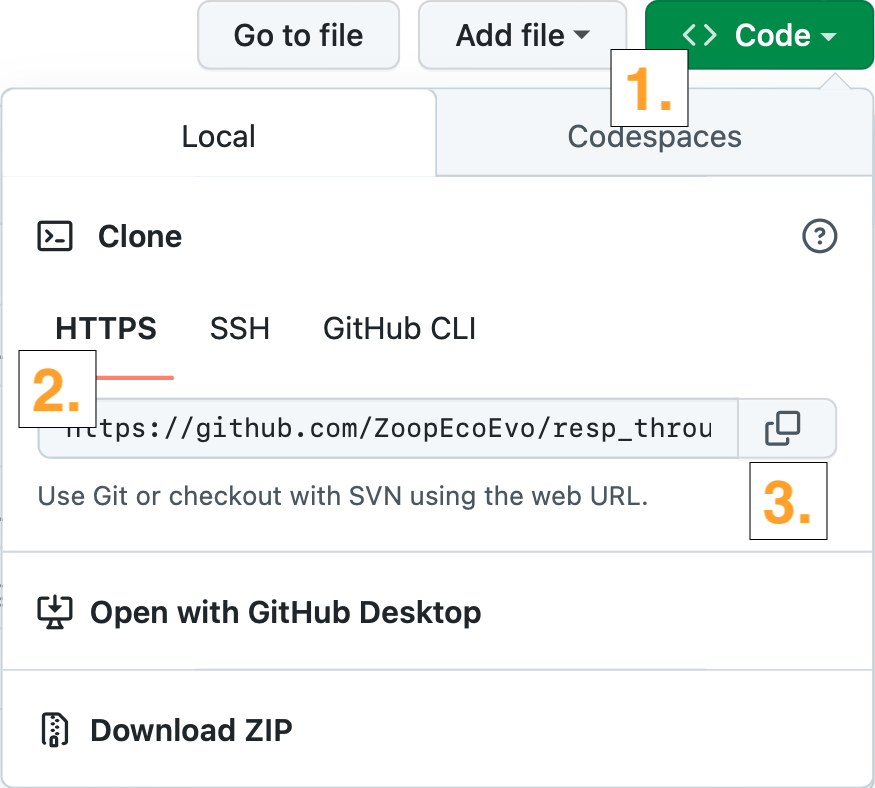
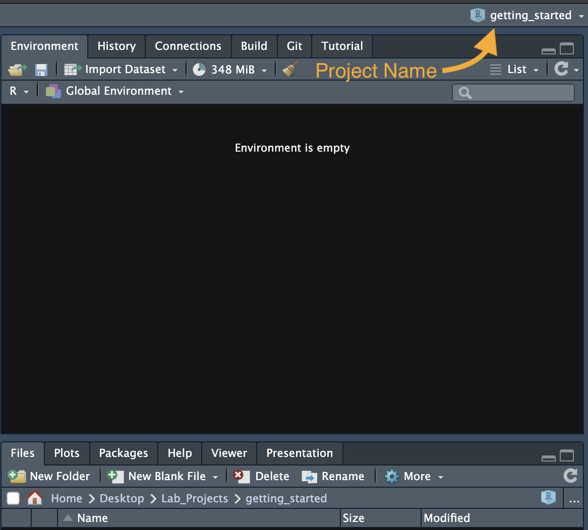
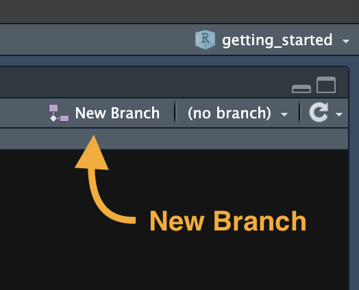

Git, GitHub, R Projects, and RStudio
Project Setup
Typically, we’ll work together to design a project from background justification to experimental design (always feel free to come to me with new project ideas at any stage though!). When setting up a project, we’ll follow a GitHub first, RProject second approach, meaning the first thing we’ll do is start the GitHub repo, and then we’ll bring that down onto your computer. I will set up a repo for the project on GitHub as part of the ZoopEcoEvo organization. The main benefits of this are that:
- The project_template repo accessible as part of this organization includes a pre-determined directory structure, appropriate file paths, .Rmd YAMLs, etc. to help minimize how much set-up time is required from you.
- This will keep all projects in a central location to make it easier to find relevant code and data.
- It can act as a ‘directory’ of sorts; the list of members are great people to go to when you have questions or ideas!
Cloning the Repo
Once the project repo is set up on GitHub, you need to get a copy of it downloaded onto your local machine (the computer you’ll be working on the code from). To do this:

- Copy the site path by clicking the green “< > Code” button in the top right corner of the repo structure.
- Typically, we’ll use HTTPS, so make sure this option is selected.
- The link can be copied by clicking the overlapping squares icon to the right of the text.
- Open RStudio and make a new project. Select version control (not new directory). In “Repository URL”, paste the URL for the GitHub repository that you copied above.
- Make sure that you keep your project folders organized on your local machine - I recommend having a single directory called “Lab_Projects” or something similar that you use to store all project folders.
You’ve now got a copy of the repo downloaded onto your local machine, which is linked to GitHub. We’ll discuss this more in other sections, but just to note it here: the main branch of every project is read only (i.e. - you likely won’t be able to directly modify the content). This is because the main branch represents the official “up to date” record of your project. To make changes, you’ll do all active development of the project on a separate branch and then merge this into the main branch. This adds a little complexity to the workflow, but means that you can freely explore any direction without worrying about losing progress you’ve already made; you can always just restore to the most recent stable version.
Naming Files
Being able to find your data files, scripts, outputs, etc. is crucial. Just as importantly, your computer has to be able to find and recognize files. This balance between human- and computer-readability will depend heavily on your file naming conventions. See this nice talk on common sense conventions to follow when naming files.
Starting a work session
When you’re ready to start working on a project, open RStudio via the .Rproj file (just double click this file, like you normally would to open a file). This will open an RStudio session with the correct settings and (most importantly) the correct working directory. When RStudio opens, you should see the project name in the top right corner of the window (over the Environment pane). Using the .Rproj file along with the project folder setup makes it easier to transfer your project across machines without breaking file paths.

Making a working branch
Remember, the main branch of each project is read-only. In order to make changes, you’ll first have to make a new branch (purple connected-square icon in the top right corner of the Git pane of RStudio). Give this branch an informative name about the goal you’re working towards - exp_design, data_carpentry, linear_model, etc. This will help me keep track of the project status). You should see this branch appear on the GitHub repo as well. Merging these changes back into the main branch (and cleaning up previously merged branches) will be covered in the Project Development section.

Pull-commit-pull-push
Once your working branch is set up, you can begin populating the project with code and text. As you work on the development of the project, you can take snapshots of the code progress using “commits”, and store these snapshots on the virtual copy of your branch by “pushing” to GitHub. A good rule of thumb is to commit whenever you finish something you’d be annoyed to lose. Make sure your commit messages are concise but useful (see here for a nice approach).
It’s a good idea to “pull” the up-to-date code from the GitHub repo at the beginning of every session to keep the local and virtual copies of your working branch in sync. This is especially important if you are working from multiple machines.
If you’re the only one working on your code, you can focus on just your working branch. If other people are working on this project as well, however, you’ll have to make sure you keep your branch up-to-date with what’s happening on the main branch as well. If you don’t, you risk ending up with major conflicts when you go to merge your branch back into main.
- You can pull from the main branch into your working branch by entering this into the terminal (not the console): git pull origin main
Other Options for Working with Git
So far we’ve been assuming you’ll be working exclusively in RStudio. The interface between RStudio and Git/GitHub is usually sufficient to integrate your project into our workflow. There are several other options, however, for using Git/GitHub to version control your work.
Similar to RStudio, there is a desktop Graphical User Interface (GUI) for working with Git and GitHub, which can help organize projects. It’s fairly intuitive to use, and I’d recommend checking it out if you’re not a fan of the RStudio interface. One benefit of the desktop GUI is that you can version control projects that don’t have a .Rproj file associated with them. Remember, any collection of files can be version controlled with Git, not just R Project Folders.
The other (probably more common) approach is running Git through the command line. This direct interface with Git provides the most control / functionality, so if you find yourself too limited by the GUIs, it might be a good idea to check whether the command line interface would better suit your needs.
Summary
Below is a general outline of the main steps you might take when sitting down at your computer to do some work on a project.
- Open your R Project via the .Rproj file.
- Pull code from the virtual working branch to make sure it’s up-to-date.
- If multiple people are working on the same project, pull from the working branch as well.
- Work on the code. Commit along the way.
- Before wrapping up, pull one last time, then push your commits to your working branch on the repo.